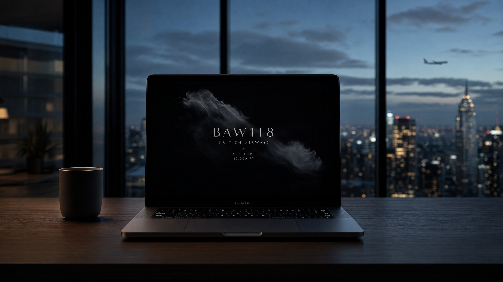

Overhead Flights: real flight data, quietly displayed on a macOS screen saver — showing the one plane passing overhead right now.

Most people spend the majority of their day glued to a phone or a laptop. This product starts from that observation: it connects a screen saver with real flight information, using the lowest possible amount of disruption to let someone feel a faint sense of connection to another person.
There's no shortage of plane-tracking tools — FlightRadar24, Plane Finder, FlightAware all lay the whole sky out as a map, a list, an alert feed. They require you to actively open the app to check; at their core, they're dashboards. The maker community has also built hardware for this: Airframe (a Raspberry Pi + e-paper display) quietly shows the nearest plane overhead — a gift its creator built for a friend who lived under a flight path. The idea itself is not something I thought of first.
| Type | Example | Behavior | Limitation |
|---|---|---|---|
| Mainstream apps | FlightRadar24, etc. | Active search, multi-plane map | Requires opening, high information density |
| Maker hardware | Airframe, etc. | Passive, single device | Requires buying parts, assembly, takes up physical space |
| Ambient screen savers | Fliqlo, Aerial | Passive, atmospheric | No flight information, or unrelated to flight |
After checking, the actual gap isn't the concept of "a plane overhead" — it's the intersection: a macOS screen saver × real flight data × editorial typography. Mainstream apps' business models don't encourage a passive screen saver; Airframe proves the passive, single-device direction works, but it adds a physical device. There's no direct precedent for a software screen saver doing this — the argument has to address Airframe head-on, not pretend the market is empty.
Move real-time data — the plane currently flying overhead, information that used to live only inside tracking apps — into the screen saver a computer is already running. No new app, no new device, no active searching: just replace what the screen saver shows, so a person can feel a faint human connection while being almost entirely undisturbed.
“I decided to build a screensaver that quietly shows flight information, so people feel connected without any effort.”
Role: independently conceived and decided on direction, visuals, trade-offs, and risk. AI collaborated on research synthesis, drafting, and implementation — rules described below.
This wasn't throwing one prompt at a tool and waiting for a result. Four tools, each with a distinct job, and I'm the gatekeeper at every step:
| Tool | Responsibility |
|---|---|
| Claude | First-pass thinking: breaking down the problem, synthesizing market research, drafting the spec, early technical trade-offs |
| Perplexity | Verifying claims: finding primary documents and research to check whether claims in the market research and design rationale actually hold up |
| Grok | Only catches errors: doesn't redo the thinking; reviews facts, assumptions, risks |
| Cursor | Only executes task packages that have already passed review; doesn't improvise before review |
The reason for choosing Perplexity is straightforward: general-purpose AI answers can occasionally sound authoritative while having no real source behind them. Perplexity attaches sources to its answers, which lets me go back and verify instead of taking it at face value. That matters for a portfolio argument that will actually be scrutinized — claims about "where the gap is" in the market research, and the research cited in the design rationale, both need to trace back to real documents, not just "the AI said so."
Gatekeeping examples (this isn't a process demo — it's the judgment itself)
Perplexity's MCP tool kept returning 404 errors. I didn't wait for the tool to get fixed, and I didn't fill the gap with an AI's unverified memory — I opened a browser myself and manually verified the research instead. The judgment call: when a tool fails, there's a choice between "get something down now, verify later" and "just do it manually." I chose the latter, because this market research ultimately has to support the claim that "this gap is real" — it can't afford to rest on unverified information.
A draft wanted to state adsbdb's rate limit as a specific number. That number had never been verified against a primary source — it was just a plausible-sounding guess from the AI. I required that "no number goes in without primary-source verification," and changed it to conservative, verifiable language instead (phrasing like "well below the public 1 req/s limit" — checkable, but not overstated). The judgment call: a portfolio gets scrutinized, and an unsourced number is worse for credibility than no number at all.
The AI surfaced an unfavorable precedent: Airframe. The safer move would have been to avoid mentioning it and let readers assume the idea was original. I chose to address it directly instead: acknowledging that Airframe had already done the "nearest plane overhead" concept earlier, and narrowing the difference down to "form factor (screen saver vs. hardware) + execution (editorial typography vs. e-paper)." The judgment call: not finding a competitor doesn't mean you've won. Being willing to face the competitor you did find head-on is what actually demonstrates product judgment — not how thorough the market research was.
Once the visual design was finalized, I marked it frozen in the documentation. I told the AI explicitly: "the text size and layout are already right — don't touch them unless I say so" — and confined its remaining freedom to the data layer and background effects. The judgment call: AI has no built-in sense of "good enough, stop here" — left alone, it tends to keep micro-adjusting past the point of visible difference. Freezing the design was a line I drew deliberately; it wasn't something the AI converged on by itself.
Define the problem itself first, before rushing to research tools. Is the actual gap the feature of "tracking planes," or the experience of "being able to passively notice something without actively checking"? Get the problem definition wrong, and no amount of competitor research afterward will fix it.
Scan mainstream apps' product logic and delivery format (FlightRadar24, Plane Finder, FlightAware), and confirm their core assumption is "the user will actively open the app to check." That assumption itself is the actual limitation in the market structure — not just a descriptive word chosen at random.
Go further and check maker projects, articles, and GitHub (Airframe, FlightTracker, etc.), deliberately looking for precedents unfavorable to my own claim, to avoid convincing myself the market was empty. This step exists so the positioning statement in the Situation section can survive the most direct rebuttal: "hasn't someone already done this?"
Verify API terms against primary documentation (airplanes.live's rate limit, terms of use). Any number without a primary source doesn't go into a public-facing document — better to use conservative, verifiable language than a number that looks more precise but has no traceable source.
Converge on a single positioning statement that can withstand challenge: acknowledge the precedent exists, and compress the actual difference down to two points — "the screen saver as the medium" + "editorial typography as the execution" — rather than vaguely claiming "nothing like this exists."
Three frameworks, one line each, then down to the actual numbers:
How these three frameworks became actual visual decisions:
rgb(0.02, 0.02, 0.025)) plus low-saturation silver-white text. There's no need to lean on the cliché of "cool colors" to create a sense of calm — lowering brightness and saturation directly is enough.Hard constraint of the screen saver: any mouse movement or key press exits it immediately — there's no intermediate state like "click to reveal more." So disclosure is reduced to two honest states:
| State | Behavior |
|---|---|
| No plane | Near-total black |
| Plane present | Shows callsign, airline, altitude, bearing. As long as it stays within range, it keeps displaying (updated roughly every 90 seconds); only leaving range or losing the flight returns it to black. |
The interest comes from the rarity of the event itself (a real plane actually passing over), not from stacking interactions or animation to please. When data can't be fetched, it fails silently into black rather than showing an error — a quiet way to fail, and part of the same "don't disturb" principle.
“If the flight data were fake, the whole point of the project would break — the connection has to be real, or it's just decoration.”
The original approach handled everything through WebView (rendering, text, data requests), and it hit repeated failures inside the legacyScreenSaver environment, forcing the whole architecture to change direction:
WebView's fetch was unreliable — the exact same code worked fine in a regular browser, but would silently fail inside the screen saver environment, with no clear error to catch. Fix: move all data requests to native NSURLSession.
WebView's text animation would freeze — requestAnimationFrame and opacity transitions would lock up in this environment, causing the text fade-in to simply fail. Fix: render text with native AppKit NSTextField, and let AppKit's own animation handle the motion.
WebView's background frequently failed to render at all — the whole screen would occasionally show up blank, with the background layer not painting. Fix: render the background with native Core Image (Etheral Shadow style: grayscale mask + distortion + noise).
The conclusion from all three failures was a dual-layer native approach: AppKit for text, Core Image for the background, URLSession for data — WebView dropped out of the main path entirely. The cost of this decision was losing the flexibility of iterating quickly with web technology; what it bought instead was genuine stability inside the screen saver environment. It only replaces the screen saver's content — it doesn't change the wait time a user sets in System Settings.
macos/build-and-install.sh: a one-command build-and-install script, designed for "a friend who has Xcode but doesn't know this project's internals" — not an internal tool only I can understand.overhead-flights-demo.mp4 (an actual capture of BAW8RM, a flight with a fully resolved route), and a static hero image — chosen because it shows callsign, airline, origin → destination, and altitude/bearing all at once, all real data, not layout placeholders.A quiet ambient display: it doesn't compete for attention by interrupting. When a plane is present, it gives a restrained cue; when it isn't, it's just black. It turns "there's a plane overhead" into an environmental fact that can be noticed, never forced on anyone.
| Goal | Result |
|---|---|
| Product installs | ✅ .saver installs; selectable in System Settings' "Customize" |
| Shows real flights, not simulated | ✅ Multiple real callsigns, verifiable against airplanes.live |
| Polling respects the spirit of the public terms | ✅ 90-second polling, below the official 1 req/s limit |
| Visuals read as editorial typography, not a tracking tool | ✅ Near-black background + AppKit text; no map, no list, no terminal green |
| A third person can install it from the docs | ⚠️ README and script are ready; no friend test-install feedback yet |
| Positioning holds up to challenge | ✅ Airframe addressed directly; the difference distilled to medium + aesthetic execution |
Limitations: Unsigned, so it triggers Gatekeeper; falls back to a fixed location without GPS; macOS only; adsbdb's exact rate limit has no primary-source number, so the wording stays conservative.
What I learned
legacyScreenSaver) can't be assumed to behave like a normal web stack — technical validation should happen earlier.Role · UI/UX & Product Designer — independently drove direction, market research, and visual/technical trade-offs
AI tools · Claude (ideation / research synthesis / drafting) · Perplexity (verifying primary sources and research) · Grok (review / challenging assumptions) · Cursor (executing approved task packages); switched to manual/web verification when research tools were blocked
Data sources · airplanes.live · adsbdb (credit: PlaneBase / David J Taylor, Edinburgh)